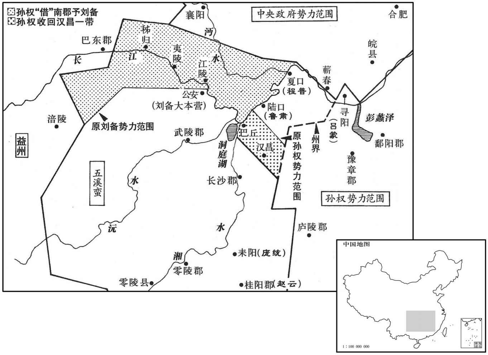

公元210年资治通鉴：本年记事、原文与白话对照
按原书编年位置阅读；追叙和史论不等于本年发生的事件。白话采用所据译本，缺译不以生成译文补齐。
卷66 · 本年记事
公元210年 · 汉孝献皇帝建安十五年
十五年〔（庚寅、二一○）〕
上传原文的注释括号有异常，字符原样保留；无法可靠划分的段落默认全文显示。
本年事件索引（现代整理）

本年形势与背景参考图
春，下令曰：「孟公绰为赵、魏老则优，不可以为滕、薛大夫。〔论语载孔子之言。朱子曰：公绰，鲁大夫。赵、魏，晋卿之家。老，家臣之长。大家势重而无诸侯之事，家老望尊而无官守之责。优，有余也。滕、薛，二国名；大夫，任国政者。滕、薛国小政繁，大夫位高责重。然则公绰盖廉静寡欲，而短于才者。〕若必廉士而后可用，则齐桓其何以霸世！〔管仲富拟公室，筑三归之台，塞门反坫，镂簋朱纮，桓公用之而霸。二三子其佐我明扬仄陋，〔书尧典曰：明明扬仄陋。扬，举也。〕唯才是举，吾得而用之！」
春季，曹操下令说：“从前，孟公绰做晋国赵、魏两家贵族的家臣首领是才力有余的，但不能胜任滕、薛等小国大夫的职务。假如必须是清廉的人才能使用，那么，齐桓公又怎么能称霸于世！大家要帮助我显扬高明人士，即使身份卑微，也要推举，只要有才能就进荐上来，让我能够任用他们！”
二月，乙巳朔，日有食之。
二月，乙巳朔（初一），出现日食。
冬，曹操作铜爵台于邺。〔水经注：铜爵台，在邺城西北，因城为之，高十丈，有屋百余间。
本段缺少可靠对应白话，原文完整保留；未使用生成译文。
十二月，己亥，操下令曰：「孤始举孝廉，〔操年二十，举孝廉，为郎。〕自以本非岩穴知名之士，恐为世人之所凡愚，〔恐时人以凡愚待之也。〕欲好作政教以立名誉，故在济南，除残去秽，〔操为济南相，国有十余县，长吏多阿附贵戚，赃污狼籍。于是奏免其八，奸宄逃窜，境内肃然。济，子礼翻。去，羌吕翻。〕平心选举。以是为强豪所忿，恐致家祸，故以病还乡里。时年纪尚少，〔少，诗照翻。〕乃于谯东五十里筑精舍，欲秋夏读书，冬春射猎，为二十年规，待天下清乃出仕耳。然不能得如意，征为典军校尉，〔见五十九卷灵帝中平五年。〕意遂更欲为国家讨贼立功，〔为，于伪翻。〕使题墓道言『汉故征西将军曹侯之墓』，此其志也。而遭值董卓之难，兴举义兵。〔见五十九卷初平元年。难，乃旦翻。〕后领兖州，破降黄巾三十万众；〔见六十卷初平三年。降，户江翻。〕又讨击袁术，使穷沮而死；〔见六十三卷建安四年。沮，在吕翻。〕摧破袁绍，〔见六十三卷建安五年。〕枭其二子；〔斩谭见六十四卷十年；斩尚见上卷十二年。枭，坚尧翻。〕复定刘表，〔见上卷上年。复，扶又翻。〕遂平天下。身为宰相，人臣之贵已极，意望已过矣。设使国家无有孤，不知当几人称帝，几人称王。或者人见孤强盛，又性不信天命，恐妄相忖度，言有不逊之志，〔言其将篡也。度，徒洛翻。〕每用耿耿，〔耿，古幸翻。毛公曰：耿耿，犹儆儆也，又忧也。〕故为诸君陈道此言，〔为，于伪翻。〕皆肝鬲之要也。〔鬲，胸鬲也。〕然欲孤便尔委捐所典兵众以还执事，归就武平侯国，实不可也。何者﹖诚恐已离兵为人所祸，〔离，力智翻。〕既为子孙计，又己败则国家倾危，是以不得慕虚名而处实祸也！〔处，昌吕翻。〕然兼封四县，食户三万，何德堪之！江湖未静，〔谓孙、刘也。〕不可让位；至于邑土，可得而辞。今上还阳夏、柘、苦三县，户二万，但食武平万户，〔上，时掌翻。武平、阳夏、柘、苦四县皆属陈国。夏，音贾。〕且以分损谤议，少减孤之责也！〔少，诗沼翻；下同。〕
十二月，已亥（疑误），曹操下令说：“我最初被推荐为孝廉时，自以为本来不是隐居深山的知名之士，恐怕被世人看作平庸无能，打算好好处理政务，推行教化，以树立名誉，故在济南国任国相时，铲除残暴邪恶势力，公正地选拔人才。由于这样，受到强门豪族的忌恨，我恐怕给家中招来灾祸，就借口有病，回到家乡。当时年纪还不大，就在谯县县城以东五十里处修建书房，打算秋季与夏季读书，冬季与春季射猎，计划这样过二十年，等天下安定以后，再出来做官。但我未能如愿，被朝廷征召为典军校尉，于是改变主意，想为国家讨贼立功，使墓道的石碑上可以题写‘汉朝故征西将军曹侯之墓’，这就是我的志愿。而后遇到董卓之乱，我兴起义兵。以后，我任兖州牧，击败黄巾军，迫使三十万黄巾军投降；又讨伐袁术，使他走投无路，穷困而死；击败袁绍，将他的两个儿子斩首示众；再消灭刘表，于是平定天下。我身为宰相，作为臣子达到尊贵的顶点，也已超出了我的愿望。假设国家没有我，不知会 几个人称帝，几个人称王？或许有人看到我势力强盛，又生性不信天命，恐怕会随便猜测，说我有篡位的野心，每一想到这些，心中就感到不安。所以，向你们述说这些话，都是我的肺腑之言。然而，想要我就这样放弃所统领的军队，交还给主管部门，回到我的封地武平侯国，实在是不可能的。为什么呢？我确实害怕自己一离开军队就会被人谋害，既是为我的子孙打算，又因为我一失败就会使国家危亡，所以，我不能追求虚名，而遭受实际的灾祸。然而，我的封地共有四个县，享有收取三万户百姓租税的权利，我的品德怎么能配得上呢？天下尚未安定，我不可以辞去官位；至于封地，是可以退让的。如今，我把阳夏、柘、苦三县的二万户封地归还给国家，只享受武平的一万户百姓的租税，姑且以此来减少对我的诽谤议论，同时也稍微减轻我的责任！”
刘表故吏士多归刘备，备以周瑜所给地少，不足以容其众，乃自诣京见孙权，〔京，京口城也。权时居京，故刘备、周瑜皆诣京见之。后都秣陵，于京口置京督，又曰徐陵督。尔雅：绝高曰京。其城因山为垒，缘江为境，因谓之京口。〕求都督荆州。〔荆州八郡，瑜既以江南四郡给备，备又欲兼得江、汉间四郡也。〕瑜上疏于权曰：「刘备以枭雄之姿，〔枭，坚尧翻。〕而有关羽、张飞熊虎之将，必非久屈为人用者。愚谓大计，宜徙备置吴，盛为筑宫室，多其美女玩好，以娱其耳目；〔好，呼到翻。〕分此二人各置一方，使如瑜者得挟与攻战，大事可定也。今猥割土地以资业之，〔谓资之土地，使成霸业。〕聚此三人俱在疆埸，〔埸，音亦。〕恐蛟龙得云雨，终非池中物也！」吕范亦劝留之。权以曹操在北，方当广炍英雄，〔炍，鲁敢翻，手取也。〕不从。〔不从瑜、范之言也。〕备还公安，久乃闻之，叹曰：「天下智谋之士，所见略同。时孔明谏孤莫行，其意亦虑此也。孤方危急，不得不往，此诚险涂，殆不免周瑜之手！」
刘表原来的部属大多数归附刘备，刘备因为周瑜拔给他的土地太少，不足以容纳自己的部下，就亲自到京口去面见孙权，请求把荆州全部交给自己管理。周瑜上书给孙权说：“刘备是一代枭雄，而且有关羽、张飞这些熊、虎一样的猛将辅佐，肯定不能长久屈居，为人所用。我认为，从大计考虑，应当把刘备迁走，安置在吴郡，为他大兴土木地建造住宅，多给他供应美女和其它玩赏娱乐的物品，使他耳目迷恋。同是，把关羽和张飞这两个人分开，派他们各驻一地，使像我周瑜这样的将领能统率他们的攻战，天下大事就可以安定了。如今滥割土地给他作为资本，使这三人都聚在疆界，恐怕就会像蛟龙得到云雨的赞助，终究不会再留在水池中了。”吕范也劝孙权留下刘备。孙权认为曹操在北方，正应该广为招揽英雄豪杰，没有听从他们的建议。刘备回到公安后，过了很久才听到这些内幕，叹息说：“天下的智谋之士，看法都差不多，当时诸葛亮劝我不要去，也是担心发生这样的事情。我正在危急中，不得不去，这实在是走险路，几乎逃不出周瑜之手！”
周瑜诣京见权曰：「今曹操新败，忧在腹心，〔谓操以赤壁之败，威望顿损，中国之人或欲因其败而图之，是忧在腹心。〕未能与将军连兵相事也。〔相事，谓相与从事于战攻也。〕乞与奋威俱进，取蜀而并张鲁，因留奋威固守其地，与马超结援，瑜还与将军据襄以慂操，〔慂，子六翻。〕北方可图也。」权许之。奋威者，孙坚弟子奋威将军、丹阳太守瑜也。
周瑜到京口去拜见孙权，说：“现在，曹操新近在赤壁大败而归，担心内部有人叛变，不能同将军用军队交战，我请求与奋威将军一起进军，夺取蜀地，并吞张鲁，然后，留奋威将军牢固地守卫那里，与马超结成联盟。我回来与将军据守襄阳，紧逼曹操，这样，就可以规划进取北方了。”孙权同意这个计划。奋威将军，是指孙坚弟弟的儿子，丹阳太守孙瑜。
周瑜还江陵为行装，于道病困，与权笺曰：「修短命矣，诚不足措；但恨微志未展，不复奉教命耳。〔复，扶又翻；下同。〕方今曹操在北，疆埸未静；刘备寄寓，有似养虎；〔言养虎将自遗患。〕天下之事，未知终始，此朝士旰食之秋，〔旰，右旦翻，晚也。朝，直遥翻。〕至尊垂虑之日也。鲁肃忠烈，临事不苟，可以代瑜。傥所言可采，瑜死不杇矣！」卒于巴丘。〔裴松之曰：瑜欲取蜀，还江陵治严，所卒之处，应在今之巴陵，与前所镇巴江，名同处异也。据水经注，巴丘山在湘水右岸，晋武帝太康元年立巴陵县，宋文帝元嘉十六年置巴陵郡，今岳州也。考异曰：按江表传，瑜与策同年，策以建安五年死，年二十六，瑜死时年三十六，故知在今年也。〕权闻之哀恸，曰：「公瑾有王佐之资，今忽短命，孤何赖哉！」自迎其丧于芜湖。〔芜湖县，属丹阳郡。〕瑜有一女、二男，权为长子登娶其女；〔为，于伪翻。长，知两翻。〕以其男循为骑都尉，胤为兴业都尉，妻以宗女。〔妻，七细翻。〕
周瑜回到江陵准备行装，在途中病势沉重，上书给孙权说：“人寿的长短都是由命运决定的，实在不足惋惜。我只恨心中的微小志愿尚未实现，再也不能执行您的命令罢了。现在，曹操在北方，疆场并没有平静；刘备寄居在荆州，好像是在家里养了一只老虎。天下的大局，还在动荡不定，这正是大臣和将士们奋发忘食之时，也是您思虑运筹之日。鲁肃为人忠烈，临事不苟，可以接替我的职务。假如我的建议可以被采纳，我就虽死不朽了。”周瑜在巴丘去世。孙权得到消息后，十分悲痛，大哭着说：“周瑜有辅佐帝王的才能，现在忽然短命而死，我依靠谁呢？”孙权亲自到芜湖去迎接周瑜的录柩。周瑜有一个女儿、两个儿子，孙权为自己的大儿子孙登娶周瑜的女儿为妻；任命周瑜的儿子周循为骑都尉，把自己的女儿嫁给他；又任命周瑜的另一个儿子周胤为兴业都尉，把自己宗族的一个姑娘嫁给他。
初，瑜见友于孙策，太夫人又使权以兄奉之。是时权位为将军，诸将、宾客为礼尚简，而瑜独先尽敬，便执臣节。程普颇以年长，数陵侮瑜，瑜折节下之，〔长，知两翻。数，所角翻。折，而设翻。下，遐稼翻。〕终不与校。普后自敬服而亲重之，乃告人曰：「与周公瑾交，若饮醇醪，不觉自醉。」〔酒不浇为醇。醪，滓汁酒。〕
起初，周瑜是孙策的朋友，孙权的母亲吴太夫人又曾让孙权把周瑜当作兄长来尊敬。当时，孙权的职位只是讨虏将军，部下将领与宾客们对他的礼节还较为简单，而只有周瑜带头，以臣属礼节事奉孙权。程普自以为年龄比周瑜大，多次凌辱周瑜，周瑜却降低自己的身份来对待程普，始终不与他计较。后来，程普佩服周瑜，对周瑜亲近敬重，于是告诉别人说：“与周公瑾交往，好象喝下醇厚的美酒，不知不觉就已沉醉。”
权以鲁肃为奋武校尉，代瑜领兵，令程昔领南郡太守。鲁肃劝权以荆州借刘备，与共拒曹操，权从之。〔为孙、刘争荆州张本。考异曰：肃传曰：「曹公闻权以土地业备，方作书，落笔于地。」恐操不至于是，今不取。〕乃分豫章为番阳郡，〔番，蒲何翻。〕分长沙为汉昌郡；〔鄱阳，今饶州地。沈约志，长沙郡有吴昌县，汉末之汉昌也，吴更名。至隋，废吴昌入罗县；唐武德八年，又省罗县入湘阴。则知吴立汉昌郡，在唐岳州湘阴县界。〕复以程普领江夏太守，〔复，扶又翻。〕鲁肃为汉昌太守，屯陆口。〔水经，江水左径乌林南，又东，右岸得蒲矶口，即陆口也。水出下隽县西三山溪，入蒲圻县北，径吕蒙城西；孙权征长沙、零、桂所镇也。
本段缺少可靠对应白话，原文完整保留；未使用生成译文。
初，权谓吕蒙曰：「卿今当涂掌事，〔当涂，犹言当路也。〕不可不学！」蒙辞以军中多务。权曰：「孤岂欲卿治经为博士邪！但当涉猎，见往事耳。〔师古曰：涉，若涉水；猎，若猎兽。言历览之，不专精也。治，直之翻。〕卿言多务，孰若孤﹖孤常读书，自以为大有所益。」蒙乃浆就学。及鲁肃过寻阳，与蒙论议，大惊曰：「卿今者才略，非复吴下阿蒙！」蒙曰：「士别三日，即更刮目相待，大兄何见事之晚乎！」肃遂拜蒙母，结友而别。
起初，孙权对吕蒙说：“你现在担任要职，执掌权力，不能不学习。”吕蒙推辞说军中事多，没有时间学习。孙权说：“我难道是要你研究儒家经典，去做博士吗？我只是要你去浏览书籍，了解过去发生过的事情。你说事多，但谁会像我这样忙？我经常读书收，自以为得到很多好处。”于是吕蒙开始读书。等到鲁肃经过寻阳时，与吕蒙谈话，大吃一惊说：“你今天的才干谋略，再不是吴郡那里的阿蒙了！”吕蒙说：“士别三日，就应该重新刮目相看，大哥为什么对这个道理明白得这么晚呢！”鲁肃就去拜见吕蒙的母亲，与吕蒙结为好友才分手。
刘备以从事庞统守耒阳令，〔耒阳县，属桂阳郡。宋白曰：郡国志云：鳌山口，即耒阳县。耒，卢对翻。〕在县不治，免官。鲁肃遗备书曰：「庞士元非百里才也，使处治中、别驾之任，始当展其骥足耳！」〔遗，于季翻。处，昌吕翻。百官志：司隶校尉，从事史十二人：功曹从事，主选署及众事；别驾从事，校部、行部则奉引，录众事。州牧则改功曹从事为治中从事。杜佑曰：别驾从事史，从刺史行部，别乘一乘传车，故谓之别驾。治中从事史，居中治事，主众曹。功曹，主选用。〕诸葛亮亦言之。备见统，与善谭，大器之，〔善谭者，剧论当世事也。谭，与谈同。〕遂用统为治中，亲待亚于诸葛亮，与亮并为军师中郎将。
刘备任命从事庞统为耒阳县县令，庞统在任时政务荒废，被免官。鲁肃写信给刘备，说：“庞统的才干不适于管理一个方圆百里的小县，让他处在治中、别驾的职务上，才能发挥他的才干。”诸葛亮也谈到庞统的才干。刘备召见庞统，与他详细谈论天下大势后，大为器重，就任命他为治中，对他的亲信程度及待遇仅次于诸葛亮，委任庞统与诸葛亮同时担任军师中郎将。
初，苍梧士燮为交趾太守。交州刺史朱符为夷贼所杀，州郡扰乱，燮表其弟壹领合浦太守，党领九真太守，〔党，胡悔翻，又于鄙翻。〕武领南海太守。燮体器宽厚，中国士人多往依之。雄长一州，偏在万里，威尊无上，〔天下殽乱，燮雄据偏州，人但知威尊，无复知有天子也。长，知两翻。出入仪卫甚盛，震服百蛮。
两版字句有差异，建议核对原文。
起初，苍悟人士燮担任交趾郡太守。交州刺史朱符被夷人乱贼杀死，州郡陷入混乱。士燮上表推荐他的弟弟士壹代理合浦郡太守，士代理九真郡太守，士武代理南海经郡太守。士燮性情宽厚，有很多中原地区的士大夫都去投奔他。士燮在交州地区权势显赫，与朝廷又相隔万里，他在那里的威望与尊严都到了至高无上的程度，出入时的仪仗警卫十分盛大，威震当地的各蛮族，使他们顺服。
朝廷遣南阳张津为交州刺史。津好鬼神事，常着绛帕头，〔好，呼到翻。着，陟略翻。帕，莫白翻。项安世家说：头巾，一名盗，音↨；一名帕。陆游曰：袹头者，巾帻之类，犹今言仆头。韩文公云「以红袹首」，已为失之，东坡云「绛袹蒙头读道书」，增一「蒙」字，其误尤甚。〕鼓琴、烧香，读道书，云可以助化，为其将区景所杀，〔区，乌侯翻，姓也，又亏于翻。据史，自贾琮以前，皆为交趾刺史，未得为交州。晋志，永和九年，交趾太守周敞求立为州，朝议不许，即拜敞为交趾刺史。建安八年，张津为刺史，士燮为交趾太守，共表立为州，乃拜津为交州牧。十五年，移居番禺。〕刘表遣零陵赖恭代津为刺史。〔姓谱：赖为楚所灭，子孙以国为氏。风俗通：汉有交趾太守赖先。〕是时苍梧太守史璜死，表又遣吴巨代之。朝廷赐燮玺书，以燮为绥南中郎将，董督七郡，领交趾太守如故。〔【章：甲十一行本「后」字；乙十一行本同；孔本，「后」字作空格。】〕巨与恭相失，巨举兵逐恭，恭走还零陵。
朝廷派遣南阳人张津担任交州刺史，张津迷信鬼神，经常用绛色头巾包头，弹琴、烧香，读道家的书籍，说可以有助于得道。张津被他的部将区景杀死，刘表派遣零陵人赖恭代替张津担任刺史。这时，苍梧郡太守史璜逝世，刘表又派吴巨代理苍梧太守。朝廷赐给士燮诏书，任命他为绥南中郎将，管理七郡的军务，同时仍兼任交趾太守。吴巨与赖恭关系恶化，吴巨发兵进攻赖恭。赖恭逃回零陵。
孙权以番阳太守临淮步骘为交州刺史，〔姓谱：晋有步扬，食采于步，因氏焉。番，蒲荷翻。骘，职日翻。〕士燮率兄弟奉承节度。吴巨外附内违，骘诱而斩之，〔诱，音酉。〕威声大震。权加燮左将军，燮遣子入质。〔质，音致。〕由是岭南始服属于权。
孙权任命番阳郡太守临淮人步骘为交州刺史，士燮率领自己的兄弟们都听从步骘的命令。吴巨表面上服从，心里却另有打算，步骘把他引诱出来杀死，声威大震。孙权提升士燮为左将军，士燮派遣自已的儿子到孙权那里充当人质。从此，王岭以南的地区开始归属于孙权。
译本中未与胡注本可靠对应的内容
以下另列供核对版本差异，不并入胡注本正文。
译本所附古文
[3]冬，曹操作铜爵台于邺。
译本白话
冬季，曹操在邺城修建铜爵台。
译本所附古文
权以重肃为奋武样尉，代瑜领兵，令程普领南郡太守。鲁肃劝权以荆州借刘备，与共拒曹操，权从之。乃分豫章为番阳郡，分长沙为汉昌郡；复以程普领江夏太守，鲁肃为汉昌太守，屯陆口。
译本白话
孙权任命鲁肃为奋武校尉，接替周瑜，统领军队，命令程普兼任南郡太守。鲁肃劝孙权把荆州借给刘备，与刘备共同抵抗曹操，孙权同意，于是，从豫章郡中分出一部分土地，设立番阳郡；从长沙郡分出一部分土地，设立汉昌郡；又任命程普兼任江夏郡太守，鲁肃为汉昌郡太守，率军驻在陆口。